Product UX / Research & redesign / Team project
Making recommendations easier to understand, and interests easier to change.
A research-led redesign exploring a more transparent relationship between readers and their news feed, with explicit interest controls, conversational adjustments and flexible ways to catch up.
A mentor-guided product design course project, developed by a four-person team.
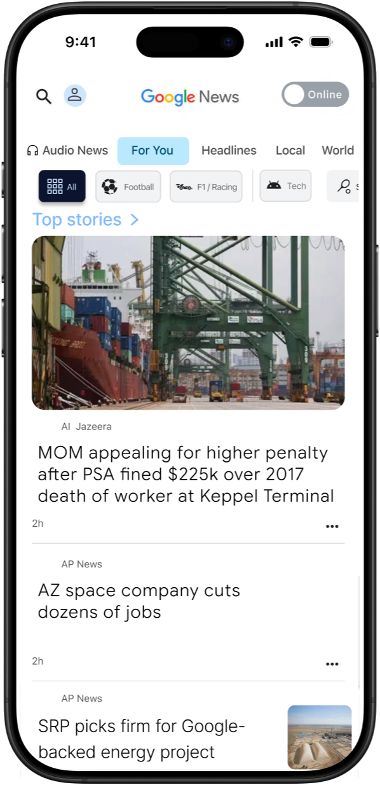
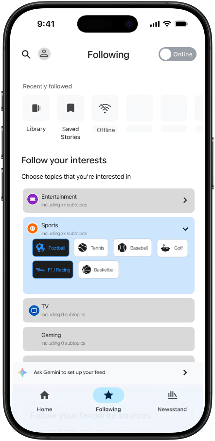
The project began with a question of control. Readers encounter plenty of news, yet understanding why a story appears, changing the feed and following an event across repeated reports can take considerable effort. Our proposal keeps the familiar navigation while making personalization more legible, conversational and user-approved.
Background & Market Changes
News increasingly reaches people through social feeds, mobile screens and short breaks in the day. Relevance and credibility have to be understood quickly.
We used the Reuters Institute’s Digital News Report 2025 as market context, alongside a review of news products. It pointed toward an opportunity for assistance that makes information easier to navigate while keeping readers involved in the decisions.
- 54%
- of the US sample accessed news through social and video networks in the previous week.
- 58%
- across the report’s markets were concerned about distinguishing true from false news online.
- 27%
- expressed interest in AI-generated news summaries.
Market research, 2025. These figures describe the report’s respondents. Reuters Institute · Overview and key findings
Assistance with a clear purpose
The report identified interest in summarizing, translating and discovering relevant news. For our redesign, this informed a focus on understandable recommendations and quicker access to a story’s key information.
Share of respondents across markets. Scale 0–100%. Digital News Report 2025
Competitive Analysis
Our competitive analysis looked across general aggregators, specialist platforms and social media. The comparison helped distinguish useful patterns in reading, context and discovery from the friction each model creates.
Non-Vertical Platforms
Apple News · SmartNews · NetEase
A broad catalog and a clear reading surface help people scan a range of stories in one place.
- The Loss
- Information often moves in one direction, with limited opportunities to question or adjust what appears.
- Insights
- Retain a calm reading hierarchy and introduce an accessible way to express interests.
Vertical Platforms
Financial Times · Yahoo Finance · Ground News
Data, source comparisons and contextual analysis support readers with a specific information goal.
- The Loss
- Dense metrics and unfamiliar terminology can create a high entry barrier.
- Insights
- Explain context in plain language and place different perspectives alongside a story.
Social & Entertainment
Flipboard · YouTube · X · TikTok
Visual formats and social circulation make news easy to encounter during everyday browsing.
- The Loss
- Opaque recommendations and uncertain credibility make it harder to evaluate the feed.
- Insights
- Make personalization visible and give the reader a direct route to adjust it.
Google News IA
We mapped the existing Home, Following, Newsstand and Profile structure, then audited three everyday tasks. Broad coverage and explicit following were useful foundations. Search guidance, repeated stories and broad interest categories introduced friction.
Search & Discovery
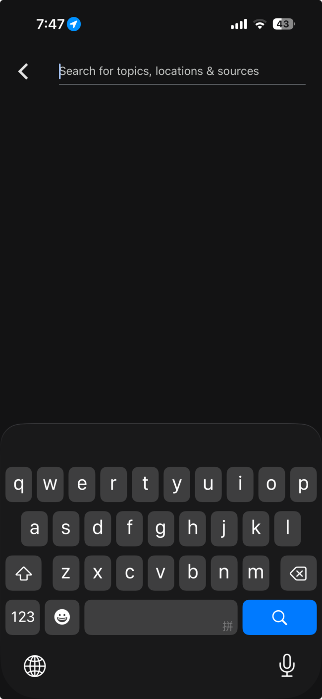
StrengthsBroad topic coverage and publisher discovery offer multiple entry points.
ProblemsAn empty search state offers little guidance. Opening an article can move the reader into a separate browser context.
Reading Experience
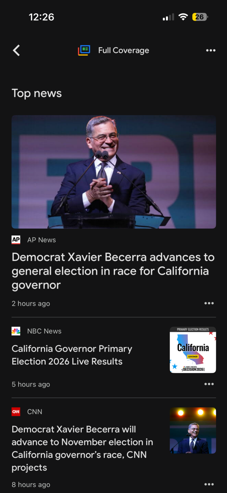
StrengthsFull Coverage brings different sources together, while local news reduces the need to search by place.
ProblemsThe same story can recur across sections. Further down the feed, grouping and hierarchy become harder to interpret.
Personalization & Control
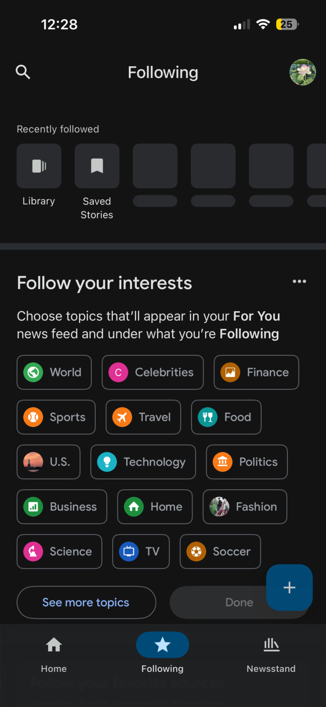
StrengthsFollowing makes some preferences explicit, and notification settings offer granular control.
ProblemsReaders cannot easily understand a recommendation or refine a broad category into the subtopics they actually want.
User Research
Our team combined a split-sample questionnaire with interviews. The survey separated current Google News users from non-users so that existing product feedback and broader news-reading expectations could be interpreted in context.
- 126
- questionnaire respondents18 Google News users · 108 non-users
- 11
- interview participantsPassive and active news consumers
- 4
- interview segmentsNon-news, beginner, intermediate and experienced readers
Survey Summary
Both survey groups valued AI personalization, offline reading, diverse perspectives and efficiency. The recurring issues were information overload, inaccurate recommendations, fragmented reading, unclear credibility, advertising and repetition.
Interview Research Strategy
Interviews explored how people access news, the time and attention available to them, and the information they need. Grouping participants by their relationship with news helped us compare incidental browsing with deliberate research.
Non-news readers
Encounter news through social media and everyday conversation. A focused entry point, credible information and concise key points matter when the wider news environment feels overwhelming.
Beginner readers
Look for news relevant to work, study and personal interests. Headlines and summaries offer a quick route to important information, with trustworthy sources remaining essential.
Intermediate readers
Follow the world and emerging trends, yet face repeated coverage and fragmented reports. They want a coherent account of an event and room for different perspectives.
Experienced readers
Cross-check multiple sources and original references. Source transparency, factual accuracy and deeper context are central to how they evaluate news.
Relevance
A useful feed may connect to personal interests, professional goals or a need to understand the wider world.
Content consolidation
Multiple reports become more useful when they form a coherent story with a clear sequence and context.
Trust & transparency
Interest in AI coexists with concerns about credibility and the ability to stay in control.
User Personas
The research was synthesized into three composite personas. Each represents a pattern of behavior and a design need, helping us consider how the same service could work during a brief glance, a commute or a more deliberate reading session.
Sarah
Incidental browsing · Mobile
Finds news in spare moments and follows what catches her attention. Relevance is judged quickly, often through headlines and comments.
- Goal
- Understand what matters and find news connected to her life with little effort.
- Challenges
- Unrelated recommendations, lengthy articles and visual clutter make a short reading window less useful.
- Design response
- Interest controls, a clear hierarchy and concise summaries.
Leo
Purposeful following · Mobile & desktop
Checks multiple sources and follows major events in depth. Some reading time is spent commuting or driving, when audio becomes useful.
- Goal
- Quickly grasp key points while retaining access to depth, sources and different perspectives.
- Challenges
- Repeated stories, separate browser visits and unclear priorities interrupt the process.
- Design response
- Consolidated event updates, contextual coverage and audio access.
Emma
Daily catch-up · Mobile & tablet
Reads around commuting, lunch and evenings. Follows particular topics, saves stories and occasionally uses AI to understand the background.
- Goal
- Stay informed within limited time and understand how an important story develops.
- Challenges
- Frequent repeated updates, scattered perspectives and unfamiliar event context consume attention.
- Design response
- Topic following, event timelines, offline reading and key-point summaries.
Design Concept
The design direction centers on transparent, controllable personalization. A reader should be able to express an interest, review a proposed change and understand what will happen to their feed.
Our brainstorm covered source credibility, topic tracking, voice search, summaries, conversation, live updates and offline access. Comparing those ideas against the personas helped us prioritize relevance, efficient access and continuity across reading situations.
- Legible
- Conversational
- Reciprocal
- Accessible
Final Design Voting Results
- Conversational personalization with Ask Gemini.
- Explicit approval of suggested interest changes.
- AI summaries and a clearer route to key information.
- Audio and offline access for different reading situations.
- Local discovery and Live Cards for followed events.
Keep the experience familiar
More features could make the information architecture harder to navigate. We kept Home, Following and Newsstand as the main navigation, then connected new capabilities to the task where they would be useful.
The team’s voting also explored search and discovery enhancements as secondary opportunities. The prototype develops the core following and reading journeys.
Design Development
We mapped new capabilities onto the existing structure, using Following as the home for explicit preferences and Home as the place to read their effect. Below is a simplified reading of the redesigned architecture. Marked entries identify proposed additions.
Home
- For You & Headlines
- Local & World news
- AI summariesProposed addition
- Event context & timelinesProposed addition
- Audio NewsProposed addition
Following
- Topics & sources
- Library & saved stories
- Expanded subtopicsProposed addition
- Ask Gemini & review suggestionsProposed addition
- Offline LibraryProposed addition
Newsstand
- Publisher discovery
- Headlines
- Business
- Sports & other categories
Profile & notifications
- Account & settings
- Activity & help
- Notification preferences
- Google News Live CardsProposed notification format
IA Redesign
Low-fidelity prototypes explored where the reader enters Following, how a conversational change is reviewed and how saved content remains available offline.
The development work connected these journeys across the app and notification surfaces. The selected wireframes retain the core task in each screen so the information hierarchy can be read clearly.
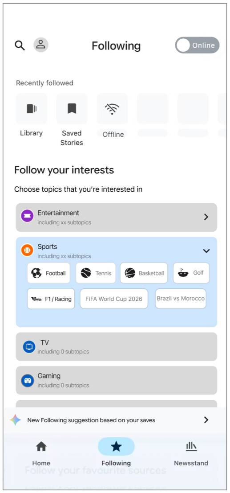
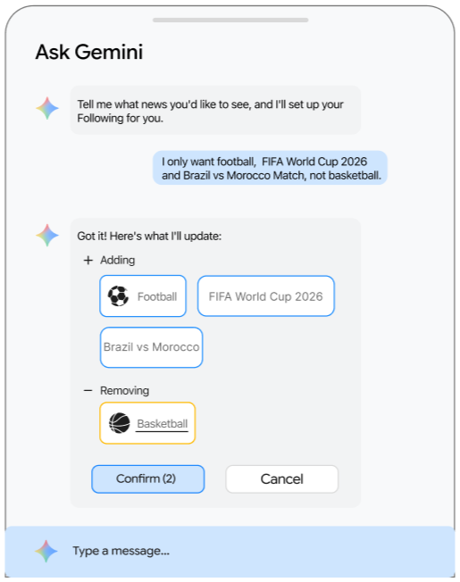
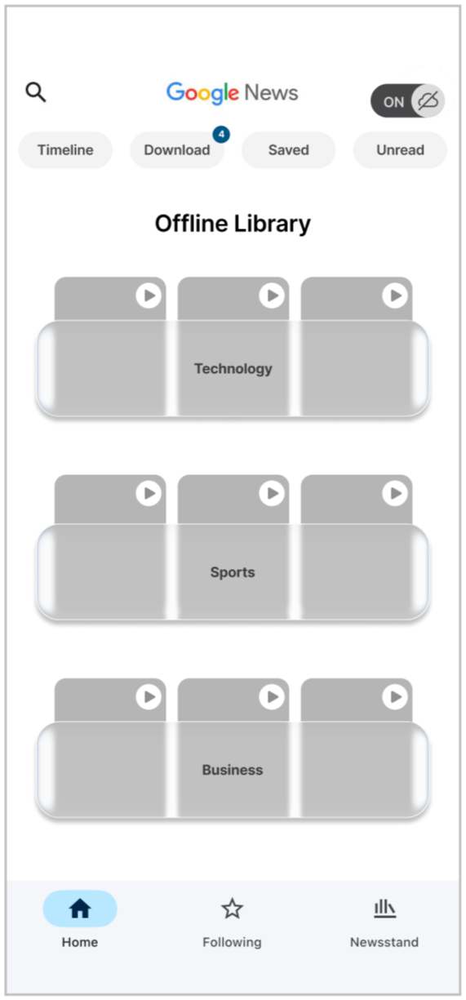
Smart Following
Manual selection
Manual selection
Broad topics expand into more specific choices. A reader interested in football and Formula 1 can select those subtopics directly, while keeping other sports outside their selection.
Recently followed shortcuts lead to the Library, saved stories and offline content. Following stays accessible from the main navigation.
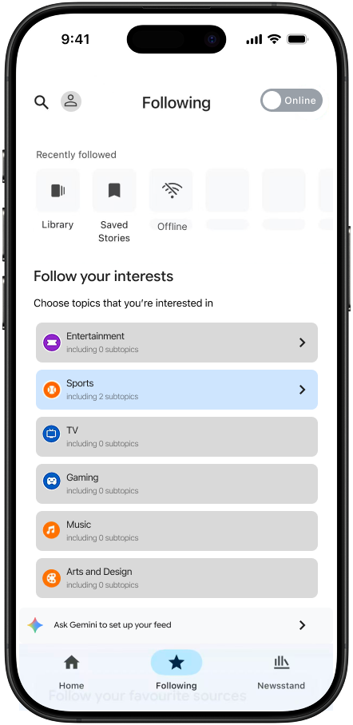
User-initiated adjustment
Ask Gemini
A persistent Ask Gemini entry point lets the reader express a preference through conversation. The example asks for football and F1 while excluding basketball.
The response translates the request into a visible checklist of additions and removals. The reader can review each item before confirming.
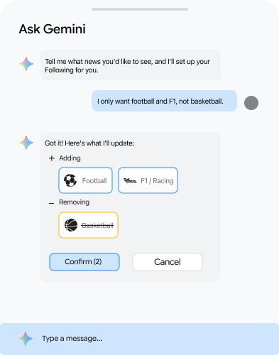
AI-suggested adjustment
AI-suggested updates
When saved stories suggest a recurring interest, a banner in Following invites the reader to review an update. The proposed changes appear in a separate confirmation view.
Suggestions remain pending until the reader accepts them. Confirm and cancel stay visible at the moment of change.
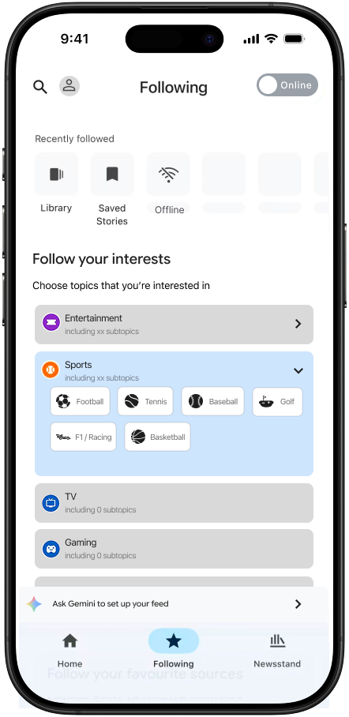
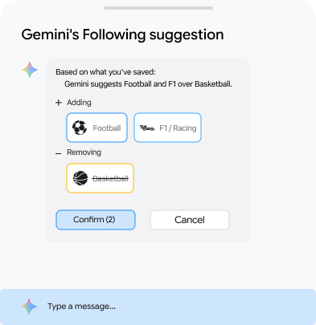
- Express
A preference
Choose a topic or describe an adjustment.
- Translate
A proposed change
Show the specific interests affected.
- Review
A visible checklist
Keep additions and removals open to correction.
- Confirm
A deliberate update
Apply the choices the reader approves.
Homepage Browsing
Personalized browsing
Integration with personalization
The home feed places followed interests near the top, creating a direct connection between a reader’s choices and the stories they browse. Headlines remain available for a broader view.
Interest shortcuts reduce the distance between setting a preference and seeing its effect.
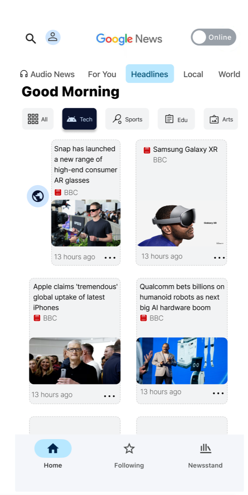
World & event discovery
Swipe right to access global news
A swipe opens a global news view. The globe and event map connect stories to places, with a proposed distinction between global, national and regional events.
Spatial context offers another entry point when a list of headlines gives too little sense of where an event is unfolding.
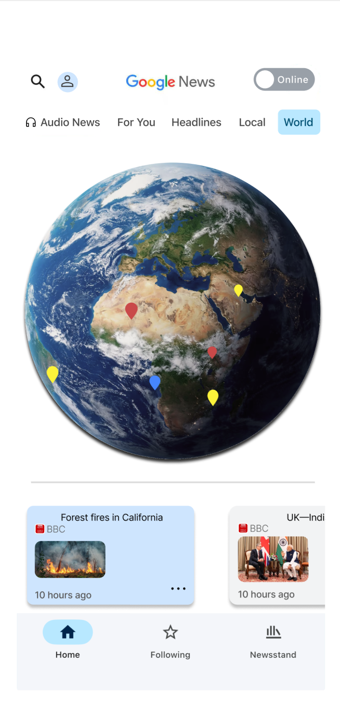
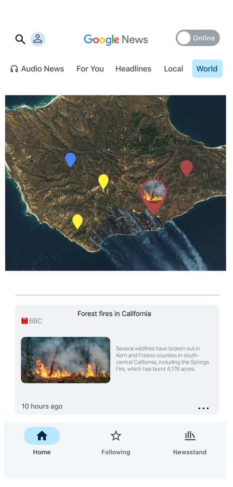
Local coverage & key information
View local news
Local coverage makes place-based information easier to reach. Within an article, an AI summary highlights key points alongside options to listen or save for later.
The proposal supports different depths of attention, from a quick summary to continued reading.
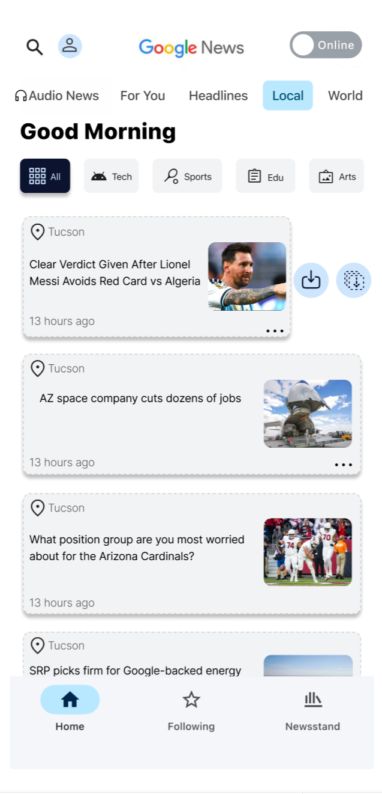
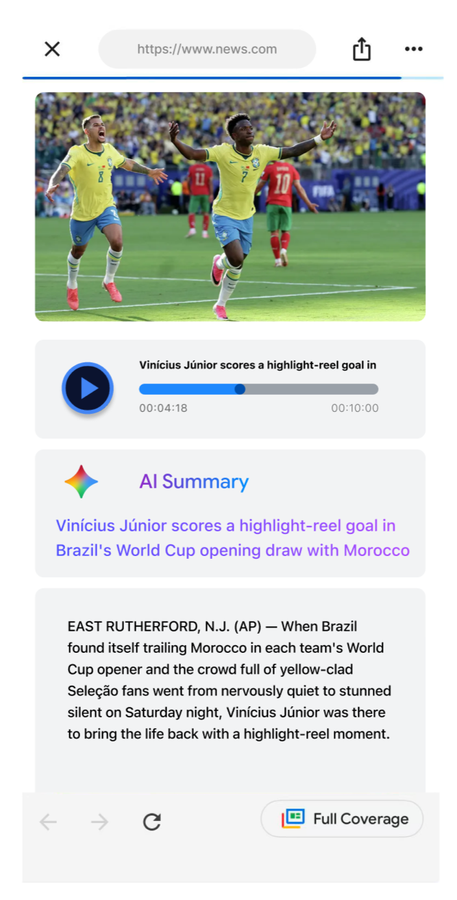
All displayed headlines, dates and events are content within the project’s interface examples.
Google Audio News & Offline News
Audio News
The audio experience supports moments when looking at a screen is difficult. A dedicated entry point, a daily brief and recently followed content make listening part of the same news service.
- Enter audio from the familiar home navigation.
- Choose a brief or a story connected to an interest.
- Use playback controls to continue hands-free.
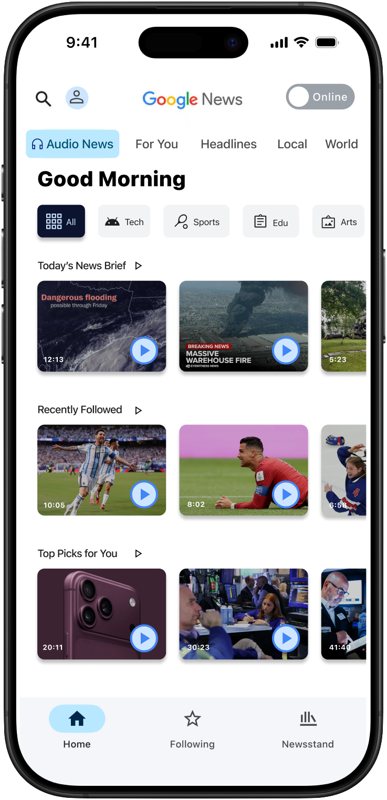
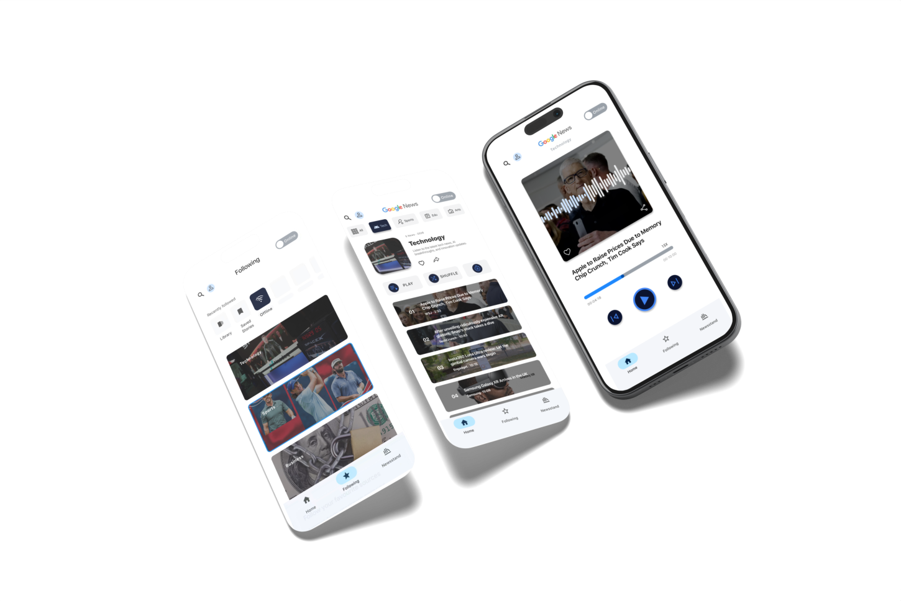
Save now, read anywhere.
Offline reading responds to unstable connections and short reading windows. The Offline Library keeps saved material together, while the playback view extends access to audio.
The combined audio and offline concept helps a reader move from a connected browsing session into a commute without losing the thread of a story.
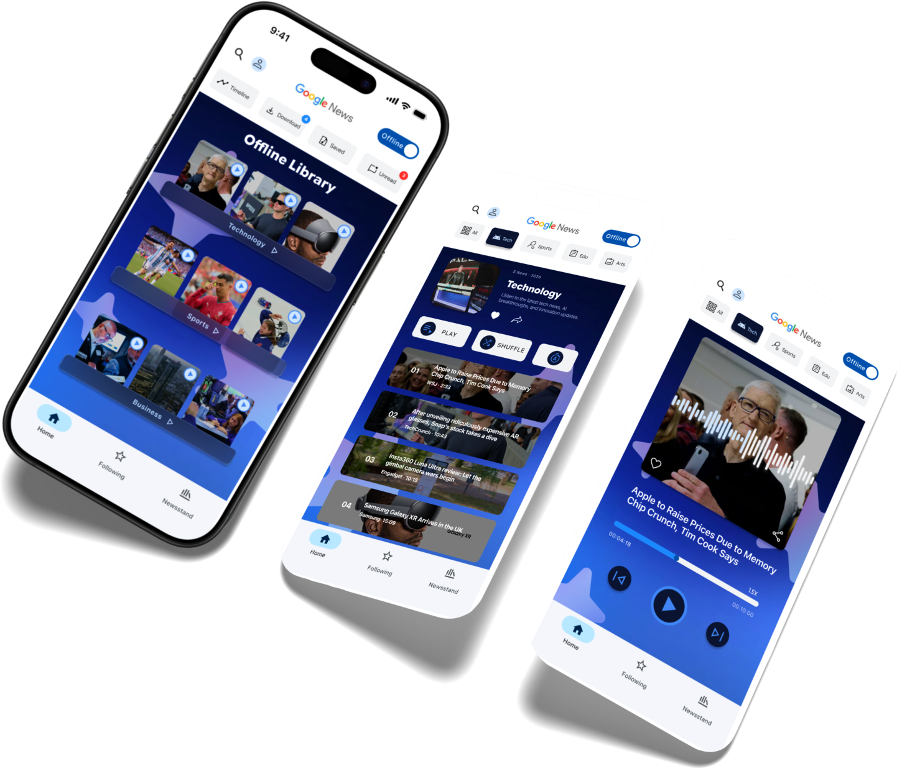
Google News Live Cards
Google News Live Cards is a proposed notification format that brings related updates into a single, evolving view.
The concept connects an event’s summary, important changes and timeline across the app and lock screen. Update frequency follows the pace of the story, helping readers keep track of developments without treating every report as a separate starting point.
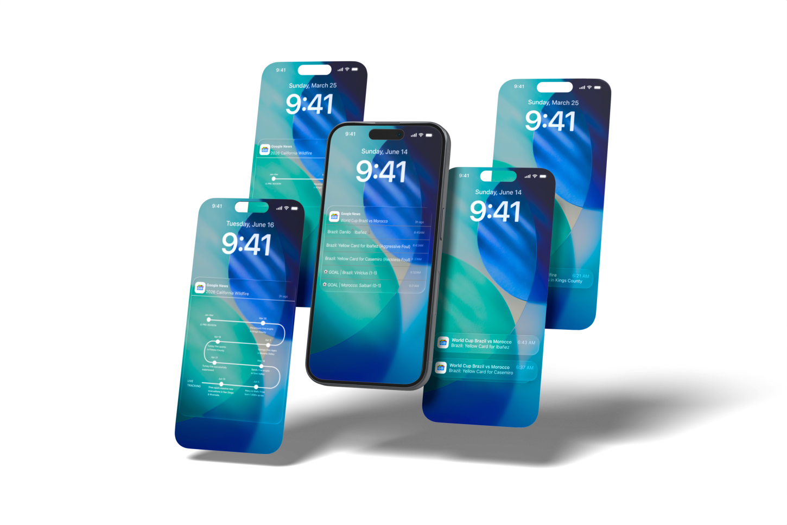
Live Tracking
The timeline places updates along an event’s development. It translates a recurring research need into a design response, organizing overlapping coverage into something a reader can follow.
The prototype explores both fast-moving updates and slower stories that need attention only at key turning points.
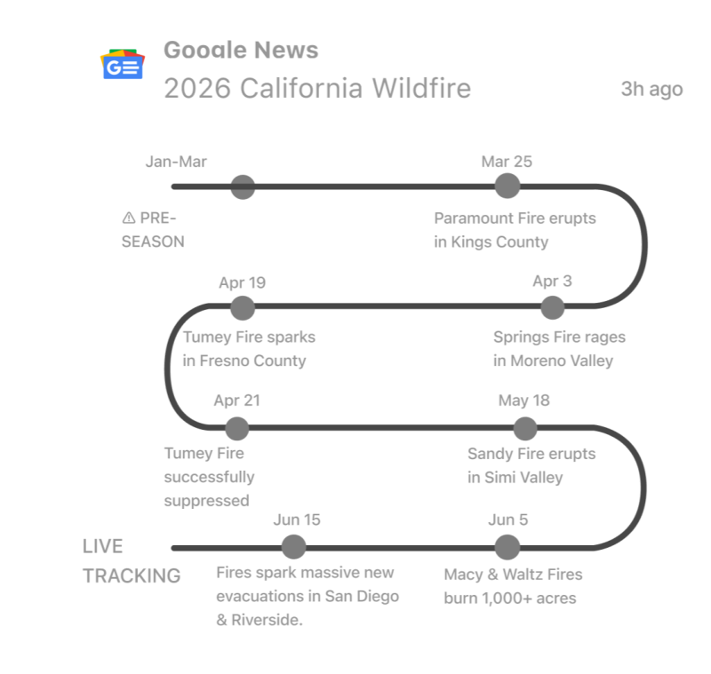
Storyboard
The storyboard follows Hannah, a composite 25-year-old marketing specialist, through short moments of news use. It connects the proposed features to the time, place and attention available in each situation.
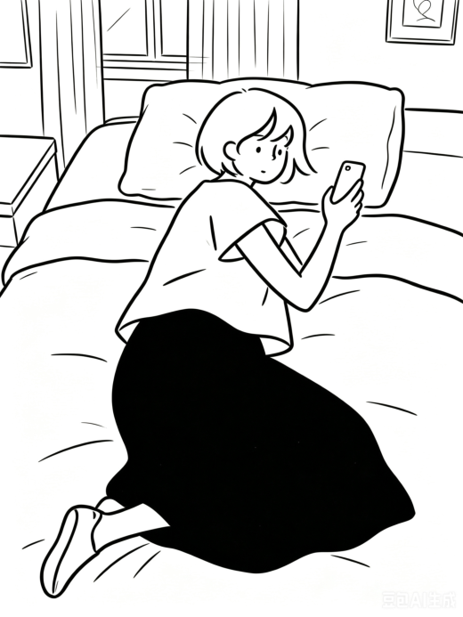
A quick first look
Scan headlines and flashcards to understand the important developments from overnight.
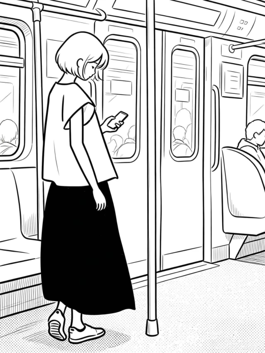
Continue offline
Open saved reading when the connection is unstable, keeping useful stories close at hand.
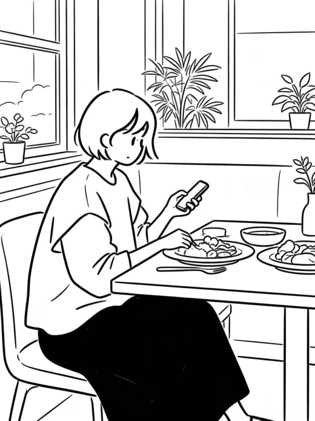
Adjust an interest
Use Following to refine what belongs in the feed as interests change.
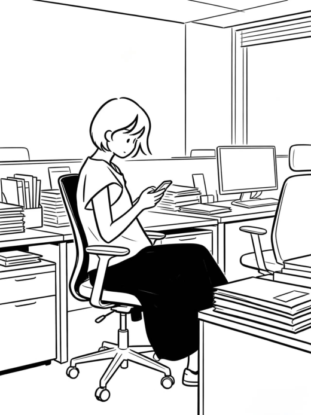
Find the wider context
Explore global news and an event’s sequence to understand how developments connect.
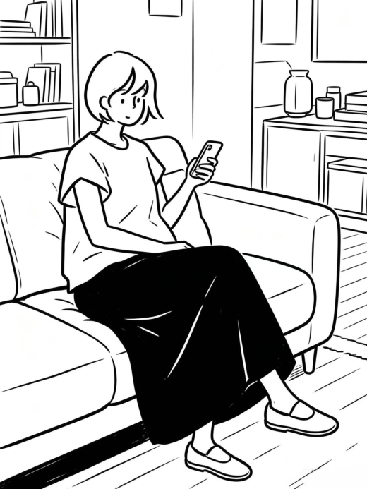
Look closer to home
Check local coverage and catch up on what is happening nearby.
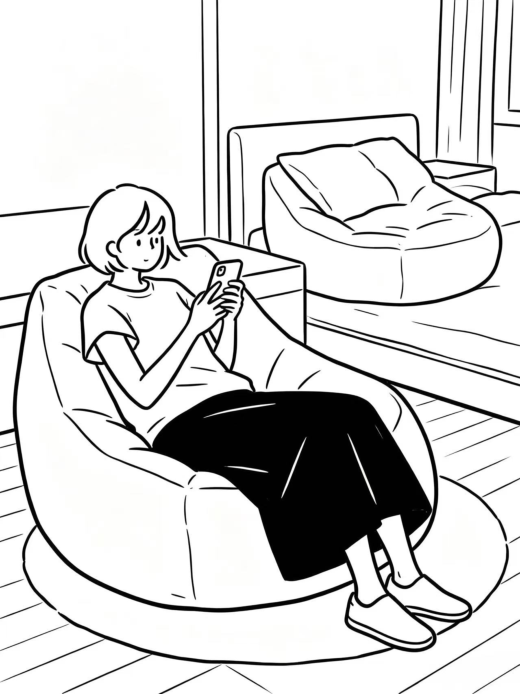
Listen to the essentials
Use audio and summarized key points for a final catch-up before putting the screen away.
Final Outcome
The outcome is a research-informed redesign prototype, connecting explicit interests, conversational adjustment and flexible access within the existing Google News structure.
Smart Following carries the central decision through the interface. A preference becomes a concrete proposal, the affected interests remain visible and the reader confirms the change. The surrounding reading features extend the same goal of making a large flow of information easier to manage.
My contribution
I contributed competitive analysis, research organization and synthesis, and low- and high-fidelity prototyping within the four-person, mentor-guided team. The survey, interviews and final design direction reflect the team’s shared work.
What I would evaluate next
A next round of usability research would examine whether readers understand the proposed additions and removals, can correct a suggestion confidently and can move between formats without losing context. These are next steps for validation of the prototype.